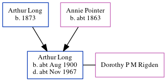

Arthur Manners Chichester Long cAug 1900 - c1967
[ Home ] | [ Calendar ] | [ Surnames Index ] | [ Census Index ] | [ Family History ]The child of Arthur Long (a golf caddy) and Annie Pointer (a laundress), Arthur Long, the second cousin twice-removed on the father's side of Nigel Horne, was born in Worth, Kent, England c. Aug 19001,2,3 and baptized there at Ss Peter & Paul on Apr 21, 1901. He married Dorothy P M Rigden in Thanet, Kent, England around May 19254.
During his life, he was living at Spinners Cottage in Worth on Mar 31, 19011; and at Deft Street, Sandwich, Kent on Apr 2, 19115.
He died c. Nov 1967 in Biggleswade, Bedfordshire, England3.
Parents
- Arthur Watts was born in 1873
- Annie Elizabeth was born c. 1863
Citations
- 1901 England, Wales & Scotland Census - Findmypast (was age 0 and the son of the head of the household)
- England & Wales births 1837-2006 - Findmypast
- England & Wales deaths 1837-2007 - Findmypast
- England & Wales Marriages 1837-2005 - Findmypast
- 1911 Census for England & Wales - Findmypast (was age 10 and the son of the head of the household)
Media
England & Wales births 1837-2006 - BMD/B/1900/3/AZ/000372/016
England & Wales deaths 1837-2007 - BMD/D/1967/4/AZ/000634/077
England & Wales marriages 1837-2008 - BMD/M/1925/2/AZ/000747/084
England Births & Baptisms 1538-1975 - R_885458839
Kent Baptisms - GBPRS/CANT/B/96431551
1911 Census for England & Wales - GBC/1911/RG14/04550/0427/5
Family Tree
Generated by ged2site. Last updated on Jun 11, 2024